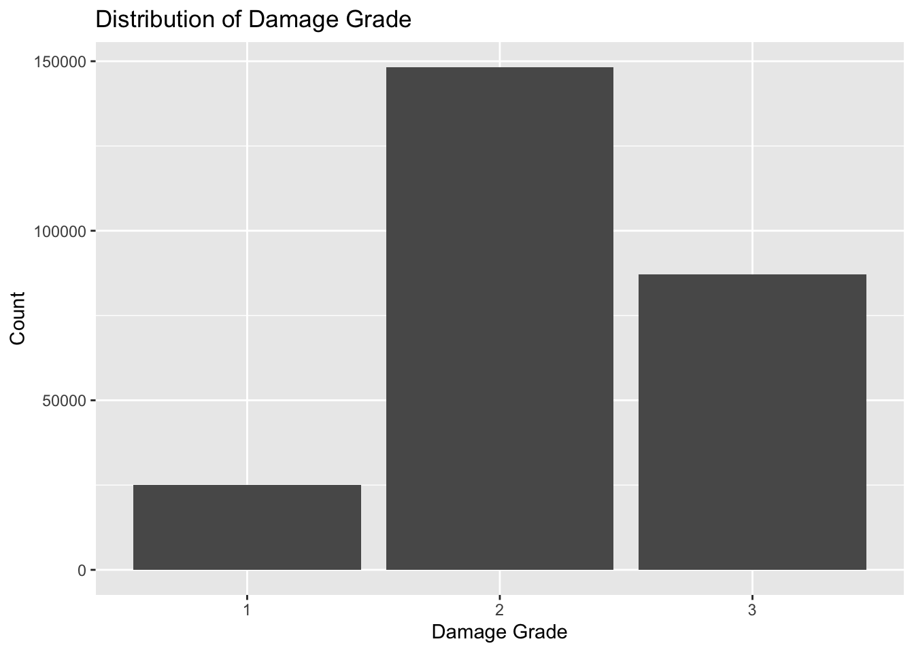

# Import libraries
set.seed(2)
library(ggplot2)
train_values <- read.csv("train_values.csv")
train_labels <- read.csv("train_labels.csv")
# Merge values and labels by building_id
buildings <- merge(train_values, train_labels, by = "building_id")
# Check dimensions
dim(buildings)[1] 260601 40# Check for missing values
colSums(is.na(buildings)) building_id geo_level_1_id
0 0
geo_level_2_id geo_level_3_id
0 0
count_floors_pre_eq age
0 0
area_percentage height_percentage
0 0
land_surface_condition foundation_type
0 0
roof_type ground_floor_type
0 0
other_floor_type position
0 0
plan_configuration has_superstructure_adobe_mud
0 0
has_superstructure_mud_mortar_stone has_superstructure_stone_flag
0 0
has_superstructure_cement_mortar_stone has_superstructure_mud_mortar_brick
0 0
has_superstructure_cement_mortar_brick has_superstructure_timber
0 0
has_superstructure_bamboo has_superstructure_rc_non_engineered
0 0
has_superstructure_rc_engineered has_superstructure_other
0 0
legal_ownership_status count_families
0 0
has_secondary_use has_secondary_use_agriculture
0 0
has_secondary_use_hotel has_secondary_use_rental
0 0
has_secondary_use_institution has_secondary_use_school
0 0
has_secondary_use_industry has_secondary_use_health_post
0 0
has_secondary_use_gov_office has_secondary_use_use_police
0 0
has_secondary_use_other damage_grade
0 0 # Change categorical values to factors
categorical <- c(
"geo_level_1_id",
"geo_level_2_id",
"geo_level_3_id",
"land_surface_condition",
"foundation_type",
"roof_type",
"ground_floor_type",
"other_floor_type",
"position",
"plan_configuration",
"legal_ownership_status",
"damage_grade"
)
buildings[categorical] <- lapply(
buildings[categorical],
as.factor
)
summary(buildings) building_id geo_level_1_id geo_level_2_id geo_level_3_id
Min. : 4 6 : 24381 39 : 4038 633 : 651
1st Qu.: 261190 26 : 22615 158 : 2520 9133 : 647
Median : 525757 10 : 22079 181 : 2080 621 : 530
Mean : 525675 17 : 21813 1387 : 2040 11246 : 470
3rd Qu.: 789762 8 : 19080 157 : 1897 2005 : 466
Max. :1052934 7 : 18994 363 : 1760 11440 : 455
(Other):131639 (Other):246266 (Other):257382
count_floors_pre_eq age area_percentage height_percentage
Min. :1.00 Min. : 0.00 Min. : 1.000 Min. : 2.000
1st Qu.:2.00 1st Qu.: 10.00 1st Qu.: 5.000 1st Qu.: 4.000
Median :2.00 Median : 15.00 Median : 7.000 Median : 5.000
Mean :2.13 Mean : 26.54 Mean : 8.018 Mean : 5.434
3rd Qu.:2.00 3rd Qu.: 30.00 3rd Qu.: 9.000 3rd Qu.: 6.000
Max. :9.00 Max. :995.00 Max. :100.000 Max. :32.000
land_surface_condition foundation_type roof_type ground_floor_type
n: 35528 h: 1448 n:182842 f:209619
o: 8316 i: 10579 q: 61576 m: 508
t:216757 r:219196 x: 16183 v: 24593
u: 14260 x: 24877
w: 15118 z: 1004
other_floor_type position plan_configuration has_superstructure_adobe_mud
j: 39843 j: 13282 d :250072 Min. :0.00000
q:165282 o: 2333 q : 5692 1st Qu.:0.00000
s: 12028 s:202090 u : 3649 Median :0.00000
x: 43448 t: 42896 s : 346 Mean :0.08865
c : 325 3rd Qu.:0.00000
a : 252 Max. :1.00000
(Other): 265
has_superstructure_mud_mortar_stone has_superstructure_stone_flag
Min. :0.0000 Min. :0.00000
1st Qu.:1.0000 1st Qu.:0.00000
Median :1.0000 Median :0.00000
Mean :0.7619 Mean :0.03433
3rd Qu.:1.0000 3rd Qu.:0.00000
Max. :1.0000 Max. :1.00000
has_superstructure_cement_mortar_stone has_superstructure_mud_mortar_brick
Min. :0.00000 Min. :0.00000
1st Qu.:0.00000 1st Qu.:0.00000
Median :0.00000 Median :0.00000
Mean :0.01823 Mean :0.06815
3rd Qu.:0.00000 3rd Qu.:0.00000
Max. :1.00000 Max. :1.00000
has_superstructure_cement_mortar_brick has_superstructure_timber
Min. :0.00000 Min. :0.000
1st Qu.:0.00000 1st Qu.:0.000
Median :0.00000 Median :0.000
Mean :0.07527 Mean :0.255
3rd Qu.:0.00000 3rd Qu.:1.000
Max. :1.00000 Max. :1.000
has_superstructure_bamboo has_superstructure_rc_non_engineered
Min. :0.00000 Min. :0.00000
1st Qu.:0.00000 1st Qu.:0.00000
Median :0.00000 Median :0.00000
Mean :0.08501 Mean :0.04259
3rd Qu.:0.00000 3rd Qu.:0.00000
Max. :1.00000 Max. :1.00000
has_superstructure_rc_engineered has_superstructure_other
Min. :0.00000 Min. :0.00000
1st Qu.:0.00000 1st Qu.:0.00000
Median :0.00000 Median :0.00000
Mean :0.01586 Mean :0.01498
3rd Qu.:0.00000 3rd Qu.:0.00000
Max. :1.00000 Max. :1.00000
legal_ownership_status count_families has_secondary_use
a: 5512 Min. :0.0000 Min. :0.0000
r: 1473 1st Qu.:1.0000 1st Qu.:0.0000
v:250939 Median :1.0000 Median :0.0000
w: 2677 Mean :0.9839 Mean :0.1119
3rd Qu.:1.0000 3rd Qu.:0.0000
Max. :9.0000 Max. :1.0000
has_secondary_use_agriculture has_secondary_use_hotel has_secondary_use_rental
Min. :0.00000 Min. :0.00000 Min. :0.000000
1st Qu.:0.00000 1st Qu.:0.00000 1st Qu.:0.000000
Median :0.00000 Median :0.00000 Median :0.000000
Mean :0.06438 Mean :0.03363 Mean :0.008101
3rd Qu.:0.00000 3rd Qu.:0.00000 3rd Qu.:0.000000
Max. :1.00000 Max. :1.00000 Max. :1.000000
has_secondary_use_institution has_secondary_use_school
Min. :0.0000000 Min. :0.0000000
1st Qu.:0.0000000 1st Qu.:0.0000000
Median :0.0000000 Median :0.0000000
Mean :0.0009401 Mean :0.0003607
3rd Qu.:0.0000000 3rd Qu.:0.0000000
Max. :1.0000000 Max. :1.0000000
has_secondary_use_industry has_secondary_use_health_post
Min. :0.000000 Min. :0.000000
1st Qu.:0.000000 1st Qu.:0.000000
Median :0.000000 Median :0.000000
Mean :0.001071 Mean :0.000188
3rd Qu.:0.000000 3rd Qu.:0.000000
Max. :1.000000 Max. :1.000000
has_secondary_use_gov_office has_secondary_use_use_police
Min. :0.0000000 Min. :0.000e+00
1st Qu.:0.0000000 1st Qu.:0.000e+00
Median :0.0000000 Median :0.000e+00
Mean :0.0001458 Mean :8.826e-05
3rd Qu.:0.0000000 3rd Qu.:0.000e+00
Max. :1.0000000 Max. :1.000e+00
has_secondary_use_other damage_grade
Min. :0.000000 1: 25124
1st Qu.:0.000000 2:148259
Median :0.000000 3: 87218
Mean :0.005119
3rd Qu.:0.000000
Max. :1.000000
# Distribution of response variable
ggplot(buildings, aes(x = damage_grade)) +
geom_bar() +
labs(
x = "Damage Grade",
y = "Count",
title = "Distribution of Damage Grade"
)